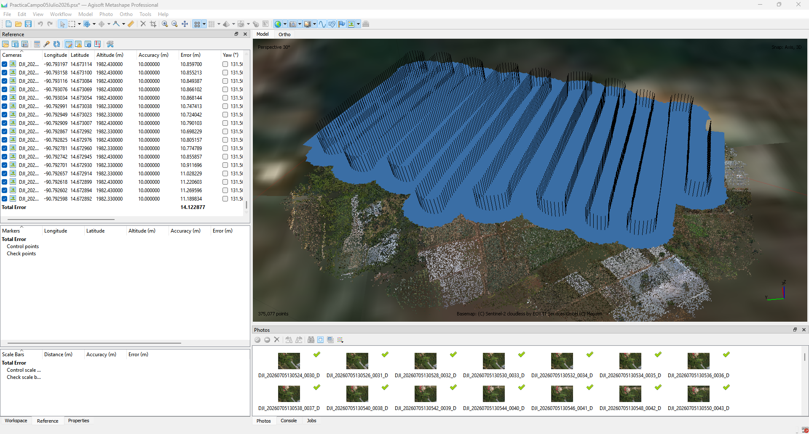

Qué se realizó en esta etapa
Se evaluó la calidad de las 1,258 fotografías y posteriormente se ejecutó el alineamiento con precisión High, preselección genérica y de referencia activadas, un límite de 40,000 key points y 5,000 tie points. El resultado fue un bloque continuo, sin cámaras aisladas, con el 100 % de las imágenes orientadas y una primera estimación de la geometría del proyecto.
Parámetros
| Parámetro | Valor |
|---|---|
| Accuracy | High |
| Generic preselection | Sí |
| Reference preselection | Source |
| Key point limit | 40,000 |
| Tie point limit | 5,000 |
| Adaptive camera model fitting | Sí |

Cámaras alineadas y distribución del vuelo.
Resultado inicial
375,077Tie Points
1.38 pxreproyección
14.09 merror Z EXIF
El error total inicial estuvo dominado por la altitud de las cámaras, no por la coherencia interna del bloque.